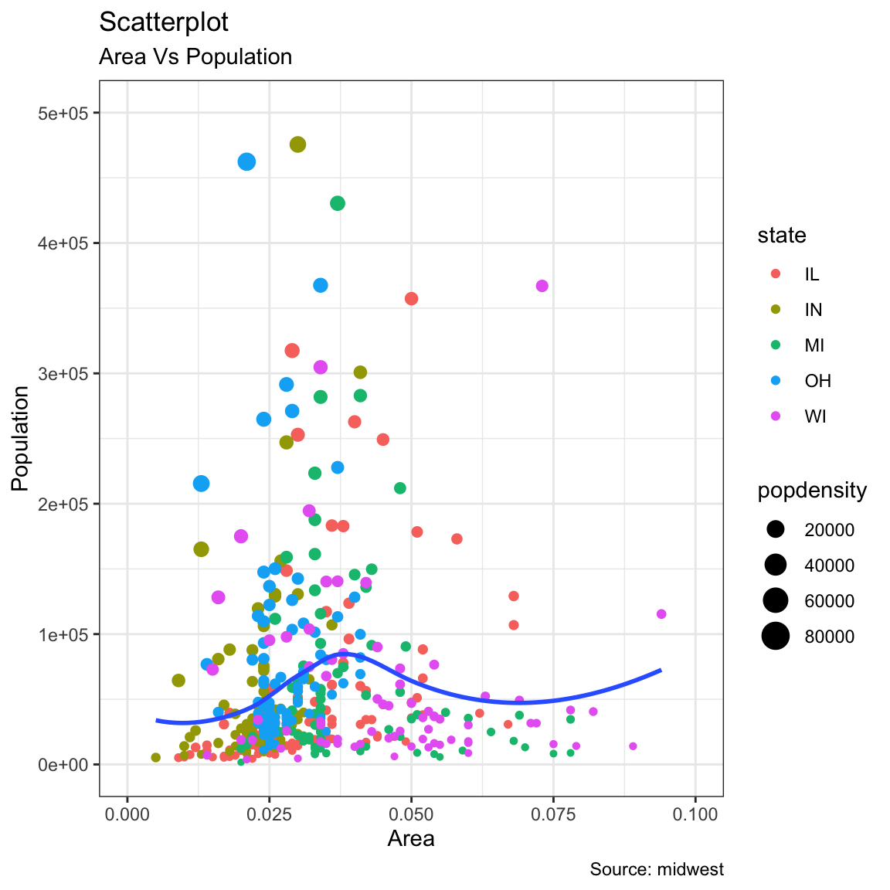
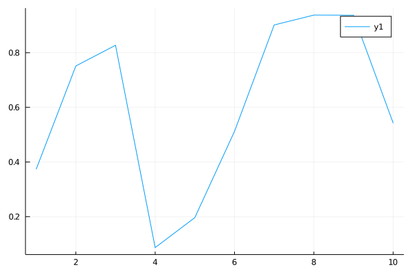

Forcats Package with a connection to tidyverse worlds: stringr, dplyr and ggplot2
Data science is an inter-disciplinary field that uses scientific methods, processes, algorithms and systems to extract knowledge and insights from many structural and unstructured data. Data science is related to data mining, machine learning and big data.
Visualization
Modeling
Jul
Rc
JS
d3
St
2020-12-03
-
R
library(dplyr) library(ggplot2) theme_set(theme_bw()) # pre-set the bw theme. data("midwest", package = "ggplot2") # midwest <- read.csv("http://goo.gl/G1K41K") # bkup data source # Scatterplot gg <- ggplot(midwest, aes(x=area, y=poptotal)) + geom_point(aes(col=state, size=popdensity)) + geom_smooth(method="loess", se=F) + xlim(c(0, 0.1)) + ylim(c(0, 500000)) + labs(subtitle="Area Vs Population", y="Population", x="Area", title="Scatterplot", caption = "Source: midwest") plot(gg)## `geom_smooth()` using formula 'y ~ x'## Warning: Removed 15 rows containing non-finite values (stat_smooth).
## Warning: Removed 15 rows containing missing values (geom_point). - Python
-
Julia
## 10-element Array{Float64,1}: ## 0.37327160806213544 ## 0.7514897211669209 ## 0.8271826138597547 ## 0.08671463620454922 ## 0.19649689677032867 ## 0.512167389458621 ## 0.9015684771244548 ## 0.9377385872164972 ## 0.9372737661280537 ## 0.5423654057015754 -
SQL
Displaying records 1 - 10 mpg cyl disp hp drat wt qsec vs am gear carb 21.0 6 160.0 110 3.90 2.620 16.46 0 1 4 4 21.0 6 160.0 110 3.90 2.875 17.02 0 1 4 4 22.8 4 108.0 93 3.85 2.320 18.61 1 1 4 1 21.4 6 258.0 110 3.08 3.215 19.44 1 0 3 1 18.7 8 360.0 175 3.15 3.440 17.02 0 0 3 2 18.1 6 225.0 105 2.76 3.460 20.22 1 0 3 1 14.3 8 360.0 245 3.21 3.570 15.84 0 0 3 4 24.4 4 146.7 62 3.69 3.190 20.00 1 0 4 2 22.8 4 140.8 95 3.92 3.150 22.90 1 0 4 2 19.2 6 167.6 123 3.92 3.440 18.30 1 0 4 4 - bash
- JS
- node
-
Rcpp
Hello
Rcpp!## [1] 10- stan
parameters { real y[2]; } model { y[1] ~ normal(0, 1); y[2] ~ double_exponential(0, 2); }## ## SAMPLING FOR MODEL '6c400a2ac89dae0e85da9f7673dc5d1c' NOW (CHAIN 1). ## Chain 1: ## Chain 1: Gradient evaluation took 1.3e-05 seconds ## Chain 1: 1000 transitions using 10 leapfrog steps per transition would take 0.13 seconds. ## Chain 1: Adjust your expectations accordingly! ## Chain 1: ## Chain 1: ## Chain 1: Iteration: 1 / 2000 [ 0%] (Warmup) ## Chain 1: Iteration: 200 / 2000 [ 10%] (Warmup) ## Chain 1: Iteration: 400 / 2000 [ 20%] (Warmup) ## Chain 1: Iteration: 600 / 2000 [ 30%] (Warmup) ## Chain 1: Iteration: 800 / 2000 [ 40%] (Warmup) ## Chain 1: Iteration: 1000 / 2000 [ 50%] (Warmup) ## Chain 1: Iteration: 1001 / 2000 [ 50%] (Sampling) ## Chain 1: Iteration: 1200 / 2000 [ 60%] (Sampling) ## Chain 1: Iteration: 1400 / 2000 [ 70%] (Sampling) ## Chain 1: Iteration: 1600 / 2000 [ 80%] (Sampling) ## Chain 1: Iteration: 1800 / 2000 [ 90%] (Sampling) ## Chain 1: Iteration: 2000 / 2000 [100%] (Sampling) ## Chain 1: ## Chain 1: Elapsed Time: 0.012376 seconds (Warm-up) ## Chain 1: 0.010643 seconds (Sampling) ## Chain 1: 0.023019 seconds (Total) ## Chain 1: ## ## SAMPLING FOR MODEL '6c400a2ac89dae0e85da9f7673dc5d1c' NOW (CHAIN 2). ## Chain 2: ## Chain 2: Gradient evaluation took 6e-06 seconds ## Chain 2: 1000 transitions using 10 leapfrog steps per transition would take 0.06 seconds. ## Chain 2: Adjust your expectations accordingly! ## Chain 2: ## Chain 2: ## Chain 2: Iteration: 1 / 2000 [ 0%] (Warmup) ## Chain 2: Iteration: 200 / 2000 [ 10%] (Warmup) ## Chain 2: Iteration: 400 / 2000 [ 20%] (Warmup) ## Chain 2: Iteration: 600 / 2000 [ 30%] (Warmup) ## Chain 2: Iteration: 800 / 2000 [ 40%] (Warmup) ## Chain 2: Iteration: 1000 / 2000 [ 50%] (Warmup) ## Chain 2: Iteration: 1001 / 2000 [ 50%] (Sampling) ## Chain 2: Iteration: 1200 / 2000 [ 60%] (Sampling) ## Chain 2: Iteration: 1400 / 2000 [ 70%] (Sampling) ## Chain 2: Iteration: 1600 / 2000 [ 80%] (Sampling) ## Chain 2: Iteration: 1800 / 2000 [ 90%] (Sampling) ## Chain 2: Iteration: 2000 / 2000 [100%] (Sampling) ## Chain 2: ## Chain 2: Elapsed Time: 0.011773 seconds (Warm-up) ## Chain 2: 0.013934 seconds (Sampling) ## Chain 2: 0.025707 seconds (Total) ## Chain 2: ## ## SAMPLING FOR MODEL '6c400a2ac89dae0e85da9f7673dc5d1c' NOW (CHAIN 3). ## Chain 3: ## Chain 3: Gradient evaluation took 1e-05 seconds ## Chain 3: 1000 transitions using 10 leapfrog steps per transition would take 0.1 seconds. ## Chain 3: Adjust your expectations accordingly! ## Chain 3: ## Chain 3: ## Chain 3: Iteration: 1 / 2000 [ 0%] (Warmup) ## Chain 3: Iteration: 200 / 2000 [ 10%] (Warmup) ## Chain 3: Iteration: 400 / 2000 [ 20%] (Warmup) ## Chain 3: Iteration: 600 / 2000 [ 30%] (Warmup) ## Chain 3: Iteration: 800 / 2000 [ 40%] (Warmup) ## Chain 3: Iteration: 1000 / 2000 [ 50%] (Warmup) ## Chain 3: Iteration: 1001 / 2000 [ 50%] (Sampling) ## Chain 3: Iteration: 1200 / 2000 [ 60%] (Sampling) ## Chain 3: Iteration: 1400 / 2000 [ 70%] (Sampling) ## Chain 3: Iteration: 1600 / 2000 [ 80%] (Sampling) ## Chain 3: Iteration: 1800 / 2000 [ 90%] (Sampling) ## Chain 3: Iteration: 2000 / 2000 [100%] (Sampling) ## Chain 3: ## Chain 3: Elapsed Time: 0.011049 seconds (Warm-up) ## Chain 3: 0.010342 seconds (Sampling) ## Chain 3: 0.021391 seconds (Total) ## Chain 3: ## ## SAMPLING FOR MODEL '6c400a2ac89dae0e85da9f7673dc5d1c' NOW (CHAIN 4). ## Chain 4: ## Chain 4: Gradient evaluation took 7e-06 seconds ## Chain 4: 1000 transitions using 10 leapfrog steps per transition would take 0.07 seconds. ## Chain 4: Adjust your expectations accordingly! ## Chain 4: ## Chain 4: ## Chain 4: Iteration: 1 / 2000 [ 0%] (Warmup) ## Chain 4: Iteration: 200 / 2000 [ 10%] (Warmup) ## Chain 4: Iteration: 400 / 2000 [ 20%] (Warmup) ## Chain 4: Iteration: 600 / 2000 [ 30%] (Warmup) ## Chain 4: Iteration: 800 / 2000 [ 40%] (Warmup) ## Chain 4: Iteration: 1000 / 2000 [ 50%] (Warmup) ## Chain 4: Iteration: 1001 / 2000 [ 50%] (Sampling) ## Chain 4: Iteration: 1200 / 2000 [ 60%] (Sampling) ## Chain 4: Iteration: 1400 / 2000 [ 70%] (Sampling) ## Chain 4: Iteration: 1600 / 2000 [ 80%] (Sampling) ## Chain 4: Iteration: 1800 / 2000 [ 90%] (Sampling) ## Chain 4: Iteration: 2000 / 2000 [100%] (Sampling) ## Chain 4: ## Chain 4: Elapsed Time: 0.011452 seconds (Warm-up) ## Chain 4: 0.012506 seconds (Sampling) ## Chain 4: 0.023958 seconds (Total) ## Chain 4:## Inference for Stan model: 6c400a2ac89dae0e85da9f7673dc5d1c. ## 4 chains, each with iter=2000; warmup=1000; thin=1; ## post-warmup draws per chain=1000, total post-warmup draws=4000. ## ## mean se_mean sd 2.5% 25% 50% 75% 97.5% n_eff Rhat ## y[1] 0.00 0.02 1.01 -1.94 -0.70 -0.02 0.73 2.01 1817 1 ## y[2] 0.10 0.07 2.85 -5.86 -1.27 0.05 1.48 6.34 1885 1 ## lp__ -1.52 0.03 1.20 -4.54 -2.12 -1.22 -0.63 -0.10 1258 1 ## ## Samples were drawn using NUTS(diag_e) at Tue Mar 16 23:52:34 2021. ## For each parameter, n_eff is a crude measure of effective sample size, ## and Rhat is the potential scale reduction factor on split chains (at ## convergence, Rhat=1). - stan